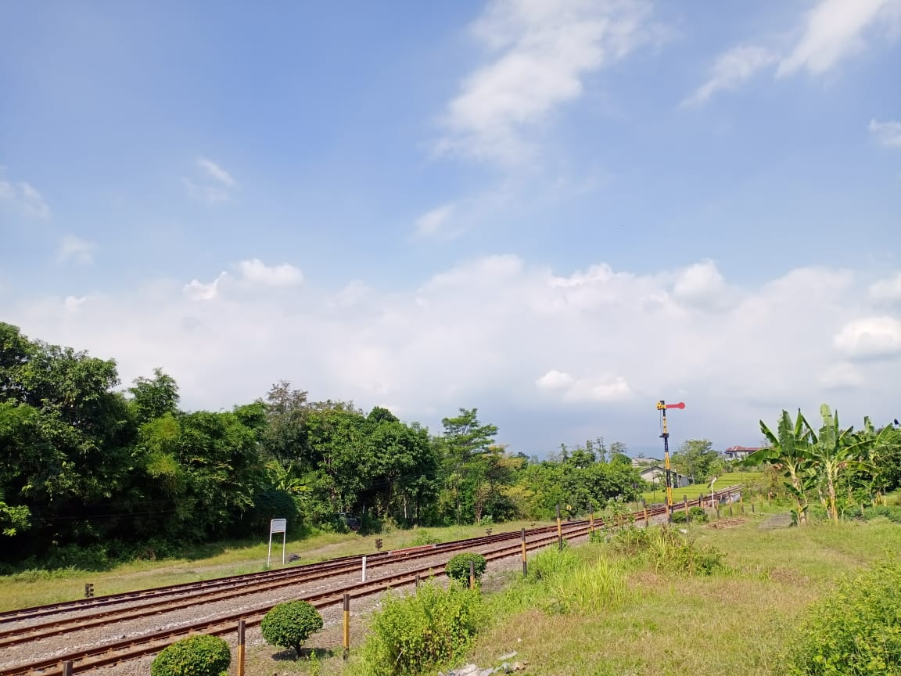
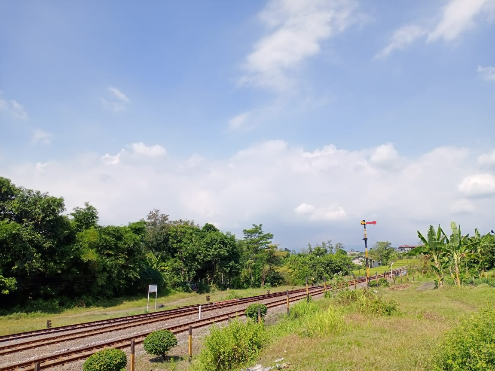

Pasuruan
Pasuruan merupakan Kabupaten dengan atraksi pariwisata terlengkap yang meliputi Pegunungan, Dataran, dan laut, sekaligus Kota Tertua kedua di Jawa Timur. Kabupaten ini berbatasan dengan Kabupaten Sidoarjo dan Laut Jawa di utara, Kabupaten Probolinggo di Timur, Kabupaten Malang di selatan, Kota Batu di barat daya, serta Kabupaten Mojokerto di barat. Kabupaten ini dikenal sebagai daerah perindustrian, pertanian, dan tujuan wisata. Kompleks pegunungan Tengger dengan Gunung Bromo merupakan atraksi wisata utama di Kabupaten Pasuruan. Wilayah timur Kabupaten Pasuruan termasuk ke dalam wilayah Tapal Kuda, Jawa Timur. Wilayah yang terluas di Kabupaten Pasuruan adalah Kecamatan Lumbang.
Pintu langit merupakan obyek wisata kekinian yang berada di Kabupaten Pasuruan, Jawa Timur. Obyek wisata alam ini menawarkan pemandangan memukau yang bisa dinikmati dari atas ketinggian. Tempat wisata Instagramable ini terletak pada ketinggian 800 meter di tempat wisata yang memiliki luas 5 hektar ini juga menawarkan sejumlah spot rekreasi. Pengunjung bisa menjumpai beragam wahana permainan kekinian yang bisa digunakan untuk rekreasi. Tak ketinggalan pula ada agrowisata dan berbagai spot menarik lainnya yang harus dieksplor.
Kabupaten Pasuruan memiliki stasiun kereta api. Salah satunya adalah Stasiun Sukorejo yang berada di Desa Glagahsari, dimana stasiun ini sudah lama tidak beroperasi dan sekarang hanya sebagai tempat pemberhentian kereta api untuk sementara atau jalur lewat kereta api saja.
 
